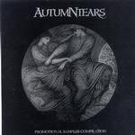

| Artist: | Autumn Tears |
| Title: | Promotional Sampler Compilation |
| Label: | Dark Symphonies |
| Length(s): | 68 minutes |
| Year(s) of release: | 2001 |
| Month of review: | {04/2001] |
| 2) | The Eloquent Sleep [B] | 9.28 |
| 3) | A Dreaming Kiss [A] | 6.05 |
| 4) | The Never [D] | 5.55 |
| 5) | The Dance [C] | 3.43 |
| 6) | The Passion And The Fury [D] | 3.09 |
| 7) | The Intermission [B] | 5.39 |
| 9) | Autumn Requiem [D] | 2.00 |
| 10) | This My Melancholic Masquerade [A] | 5.09 |
| 12) | The Absolution Of What Once Was [C] | 2.40 |
| 13) | The Widowtree [D] | 6.10 |
| 14) | Black Heaven [A] | 3.48 |
Songs come from A: The Garden Of Crystalline Dreams: Love Poems For Dying Children... Act 2 B: Reprise: Love Poems For Dying Children... Act 1 C: Absolution D: Winter And The Broken Angel: Love Poems For Dying Children... Act 3
Waltzy string orchestra we find on The Eloquent Sleep (think Camel's Raindances here). The music is punctuated by the piano and has vocals by both the female vocalist as well as a male one. The music again has a strongly classical feel and a nice melody. One might also be reminded of the first Stranger On A Train record here. A long track that is followed by the slowmoving A Dreaming Kiss. Mostly piano and female vocals here and highly ethereal. At times the tempo goes up quite a bit. Actually I have trouble getting into this track, all a bit too vague.
The Never features singing reminiscent of Enya, but a bit more classical, and synth strings trying to build up a romantic atmosphere. High angelic voices give way to fast percussive piano playing. The Dance then opens with harpsichord and has spoken French vocals. The song has a beat, which is quite a difference from the other tracks. Male and female vocals try here at making some more accessible music, and it doesn't fit them.
Gregorian chants we find in The Passion And The Fury, both low and very high. In The Intermission the male vocals take the fore, they have a more emotional sound than the female vocals, which are strongly focussed on technique, the sound of them is colder and more distant.
Ode To my Forthcoming Winter is one of the more successful tracks. Lots of keyboards here and the music is ponderous and lies like a heavy blanket of snow on your ears. One may think of Dead Can Dance but also Glenn Danzigs Black Aria here. Playful piano opens Autumn Requiem,
This My Melancholic Masquerade features slow harpsichord and sparse vocals. Then the pace comes into the music a bit more and the song gets a somewhat Arabic sound.
The Ebony Window opens stately with church like organ. The song itself is subdued but folky with nice atmospheric bells tolling at the end. The Absolution Of What Once Was is a short one. It is not in the style of the other track from the same mini album, The Dance.
The Widowtree is a sad and longing sounding track, that gets more and more emotional toward the end. I like it, because its emotionality strikes a chord, something that most of the foregoing could not do. It also has some nice melody lines on the synth strings.
The final track, Black Heaven, is a nice way of saying goodbye with its black metal vocals. Maybe a good idea to save it for last, because most people won't like this. I myself think the vocals could have sounded a bit more uglier than they do know. Somehow they do not sound dirty enough. The music is quite percussive with march rhythms and in a way somewhat Bolero like.